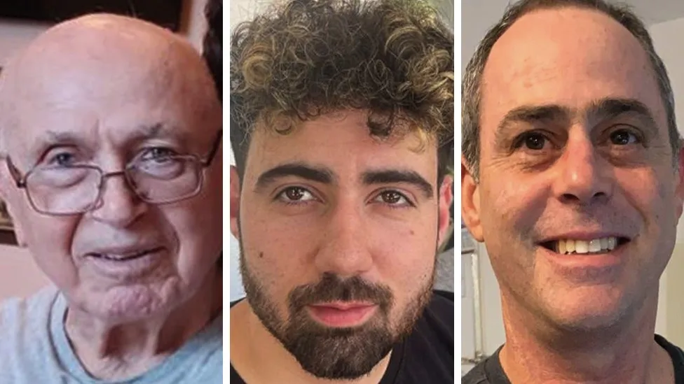
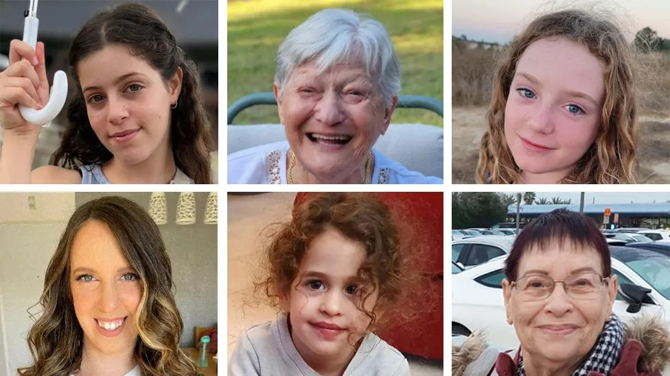
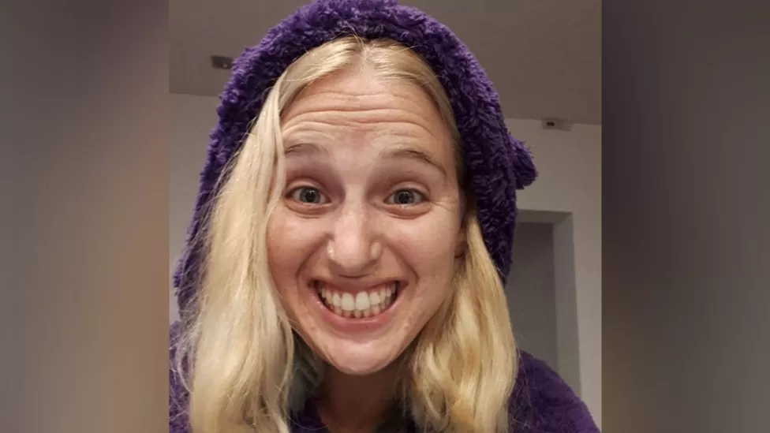
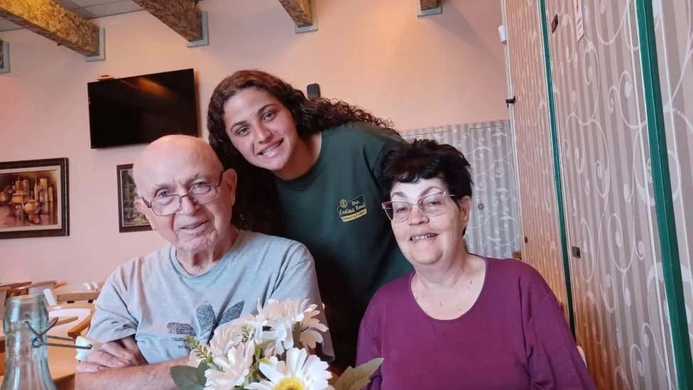
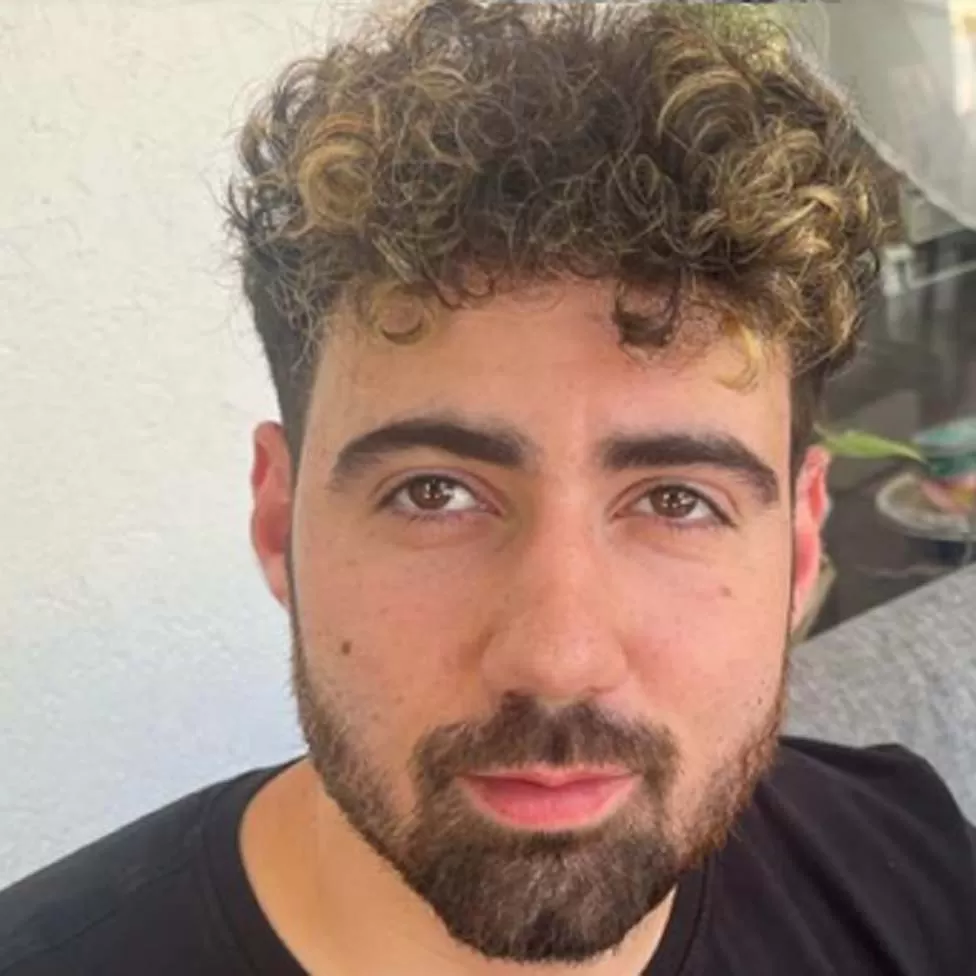
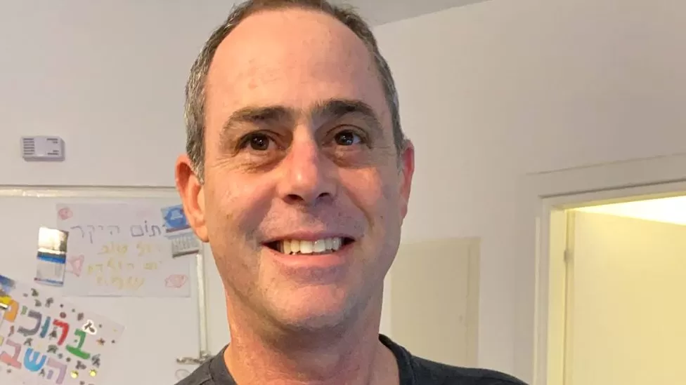

Hamas hostages: Stories of the people taken from Israel

The Israeli military says it has recovered the bodies of two hostages who were being held in Gaza.
- They have been identified as 27-year-old Eden Zecharya - who was kidnapped from the Nova music festival - and 36-year-old Ziv Dado, who had already been declared dead by the Israeli military.
- An estimated 240 people were taken prisoner by Hamas on 7 October.
- During a six-day ceasefire at the end of November, 78 hostages were released as part of a deal between Israel and Hamas.
- In exchange, 180 Palestinian prisoners were freed from jail in Israel.
- Another 23 Thais, one Filipino national and three Russian-Israelis have been released as part of separate deals.
Who are the released hostages?

A total of 110 hostages, taken prisoner during the 7 October attacks on Israel, have now been released.
- Seventy-eight of them are Israeli women and children, who were freed as part of a deal between Israel and Hamas.
- Three Russian-Israelis, two women and one man not included in the deal, have also been handed over.
- Five Israelis had already been released in October.
- Twenty-three Thai hostages and one Filipino were freed as part of a separate deal between Hamas and the Thai government.
- Yagev Kirsht, 34, was taken from his home in Kibbutz Nirim, alongside his wife, Rimon Buchstab Kirsht. She has now been released.
- Alexander Trupanov, was taken hostage with his mother Lena Trupanov, 50, his partner Sapir Cohen, 29, and his grandmother Irina Tati, 73. All were abducted from Kibbutz Nir Oz as they spent the Sabbath together, according to a statement by Canada's Raoul Wallenburg Center for Human Rights. Irina and Lena were released on Wednesday 29 November and Sapir was freed the next day.
- Ariel Cunio, his girlfriend Arbel Yahud and her brother Dolev are also thought to have been abducted in the same attack on Nir Oz. Eitan Cunio, Ariel's brother who escaped Hamas, told the Jewish Chronicle that his last message from Ariel said: "We are in a horror movie."
- David Cunio, 33, another of Ariel's brothers, was also kidnapped from Nir Oz, family say. David's wife Sharon Aloni Cunio and their three-year-old twin daughters Ema and Yuly were released on 27 November. Sharon's sister Daniele Aloni, and her six-year-old daughter Emilia were both released on 24 November.
- Doron Steinbrecher, 30, a veterinary nurse, was in her apartment in Kibbutz Kfar Aza when Hamas attacked, the Times of Israel reported. At 10:30 on 7 October, the newspaper said, she sent a voice message to friends: "They've arrived, they have me."
- Itzhak Gelerenter, 53, was taken from the Supernova festival. His family said the IDF found his phone was located in Gaza, the Times of Israel reported. His daughter Pivko told the paper: "I'm trying to think good thoughts, I have a powerful, smart, resourceful father."

Doron Steinbrecher sent a voice message to friends during Hamas' attack
- Bipin Joshi, 23, a Nepalese student, is believed to have been taken from Kibbutz Alumim. Nepalese newspaper Setopati says he was one of 49 university students studying agriculture in Israel. It says 10 students were killed in the attack.
- Ilan Weiss, 58, went missing from Kibbutz Be'eri after he was last seen leaving the house to defend the community. On 25 November, his wife Shiri Weiss, 53, and their daughter, Noga, 18, were freed from captivity in a hostage deal.
- Amiram Cooper, 85, and his wife Nurit, 80, were taken from their home in Nir Oz, their daughter-in-law Noa told the BBC. The family last spoke to the couple during the Hamas attack, Noa said, when the couple were in their safe room. The family later traced Amiram's phone to Gaza. On Monday 23 October, Nurit was one of two women to be released.

Amiram and Nurit Cooper, pictured with their granddaughter, Gali
- Guy Gilboa-Dalal, 22, attended the festival with his brother. Guy appears in a hostage video that his family say confirms he is in Gaza.
- Uriel Baruch, 35, was injured during the attack on the festival, his wife said on Facebook. Reports in Israeli media say his mother, Naomi, has heard from the IDF that he is a hostage.

Guy Gilboa-Dalal was filmed in captivity in Gaza, his family say
- Nimrod Cohen, 19, had studied software engineering in high school, according to reports. After he was kidnapped, his father was invited to meet Pope Francis in Rome along with other hostages' families.
- Tsachi Idan, 51, was last seen by his wife, Gali, as he was taken away by Hamas gunmen. Their family had been ambushed in their safe room in Nahal Oz. Their ordeal was live-streamed by Hamas. Their eldest child, Maayan - who had just turned 18 - was shot dead, Gali told the BBC.

Tsachi Idan was ambushed with his wife and children and then led away